Фундамент.
Виды фундаментов:
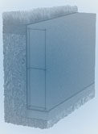
Ленточный фундамент
Существует глубинный ленточный фундамент, который монтируют на глубине ниже уровня промерзания и поверхностный ленточный фундамент, который закладывается выше уровня промерзания соответственно.Эти фундаменты возводят для строительства массивных сооружений, которые будут иметь тяжелые перекрытия либо в случаях, когда под домом запланировано строительство подвала.
Столбчатый фундамент
Когда возводят деревянные, каркасные либо щитовые конструкции, то используют фундамент столбчатого типа. В местах концентрации нагрузок и пересечения стен возводят столбы, которые могут иметь кирпичную, бетонную, железобетонную либо деревянную основу.
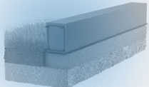
Поверхностный ленточный фундамент
Строительство фундамента может выполняться различными способами. Выбор способа зависит от конструкции, материала и того, какая стоимость ленточного фундамента является допустимой.
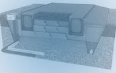
Плитный фундамент с ребрами жесткости вниз
Плитный фундамент возводят на нестабильном грунте. Чаще всего такой фундамент возводят из бетонных либо монолитных плит. Плитный фундамент называют плавающим. Плитный фундамент с ребрами жесткости вниз позволяет значительно уменьшить давление на грунт, а ребра жесткости способствуют устойчивости конструкции к промерзанию и оттаиванию, а также проседанию почвы.
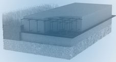
Плитный фундамент
Плитный фундамент это разновидность мелкозаглубленных ленточных. Они отличаются от других видов фундамента наличием жесткого пространственного армирования, которое распространено по всей несущей плоскости. Столь жесткая конструкция плитного фундамента позволяет ему без внутренней деформации противодействовать знакопеременным нагрузкам, которые в достаточной мере возникают в межсезонье и при неравномерных перемещениях грунта.
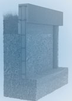
Cвайно ленточного фундамента
Конструкция свайно ленточного фундамента передает нагрузку здания на землю при помощи свай. Сама конструкция фундамента основана на сваях и ростворке, который служит для объединения свай. Такие фундаменты возводят на грунте с повышенной влажностью. Земельные работы и бетонная заливка значительно сокращаются в фундаментах этого образца.
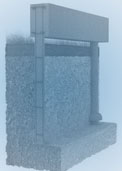
Свайно ленточный фундамент тисэ
Такое основание превосходно подходит для всевозможных типов сооружений: от сравнительно легких каркасных до трехэтажных каменных домов.Фундамент ТИСЭ можно использовать, не учитывая уровень грунтовых вод, и возводить практически на всех типах грунтов – и на мелком песке, и на тяжелой глине. Такой фундамент обеспечивает возможность строительства домов на сложных пучинистых грунтах без опасения возникновения непоправимых последствий.
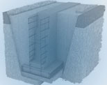
Ленточный фундамент с башмаком
Ленточный фундамент с башмаком устанавливают при возведении объектов, конструкция которых предусматривает установку колон, которые разделят давление на грунт, также башмаки необходимы для возведения дымохода.
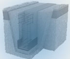
Утепленный ленточный фундамент
Утепленный ленточный фундамент помогает избежать промерзания конструкции в холодное время года. Также этот фундамент сократит тепло потери и поможет экономить на обогреве помещения.
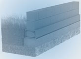
Ленточный фундамент из блоков ФБС
Этот фундамент является цельной конструкцией, устанавливается с привлечением спецтехники
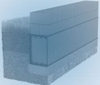
Ленточный фундамент из блоков
обладает всеми преимуществами бетонного фундамента, но конструкция ленточного фундамента возводится гораздо быстрее. Благодаря тому, что плиты выпускают разного размера можно установить фундамент без спецтехники.
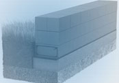
Поверхностный ленточный фундамент из блоков
Фундамент из блоков станет отличным решением для строительства объектов, которые не требуют массивного фундамента. Такой тип фундамента является обычной подушкой, которая углубляется на 200мм, имеет бетонное основание имеющее высоту в 300мм, а также опору, которая состоит из бетонных блоков.
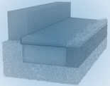
Бетонная отмостка
Вокруг дома необходима разметка, по которой укрепляется опалубка. Под отмосткой из бетона,сперва, прокладывается дорожка с применением углубления и трамбовки. Далее накладывается слой песка (речного или морского), его также следует утрамбовать.
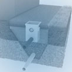
Бетонная отмостка с ливневкой и дренажем
Выполняется по всему периметру объекта. В зависимости от назначения конструкции может быть использована бетонная отмостка с ливневкой и дренажем. Отмостка защищает здание от воздействия внешних факторов.